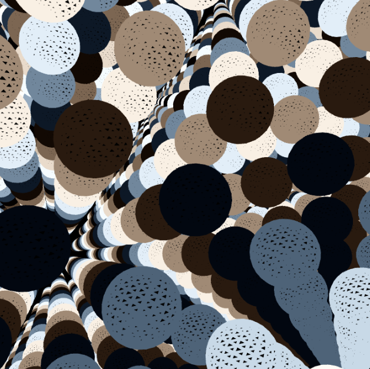
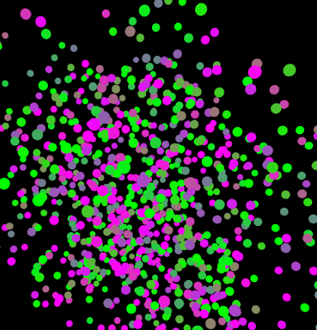
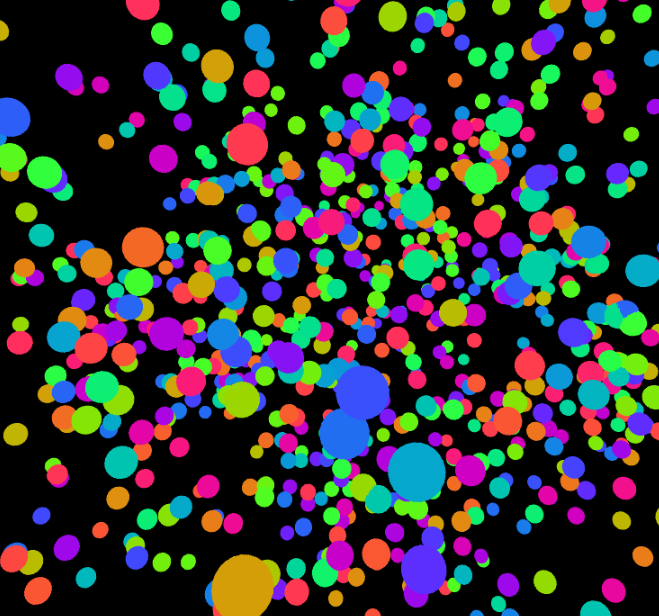
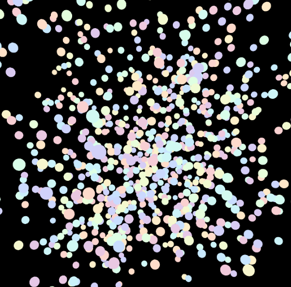

Experiment 5 - 3D Art
Imitate
The code that I started with came from Isacc Pante on the website openprocessing
Integrate
To extend the code I made the cubes into spheres instead
Then i reduced the amount of spheres on the screen

Innovate
To innovate this code, i made the spheres spawn randomly based on Perlin noise instead of being in a grid shape
After that I added the ability to zoom in and out with the scroll wheel
I then changed the color palette to have more yellows and whites so it can look like stars
I then changed the way the circles rotated, the rotation is now depended on the position of the mouse

Reflection
I contributed to all of the project, with my starting point being from Isacc Pante on the website openprocessing. With the staring code I feel that I was able to make something creative and unique enough to call my own. As I look back at my work as a whole I personally feel that I did a good job. I put a lot of thought and effort into not only coding but also coming up with ideas that seemed fun and exciting. Some brief highs and lows consist of me trying to figure out how to add to a pretty polished piece of work. However once I figured out the direction I wanted to go for this sketch, it was really fun to see what I learned in class be applied to my work.